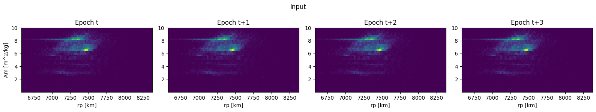
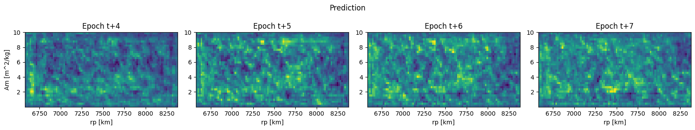
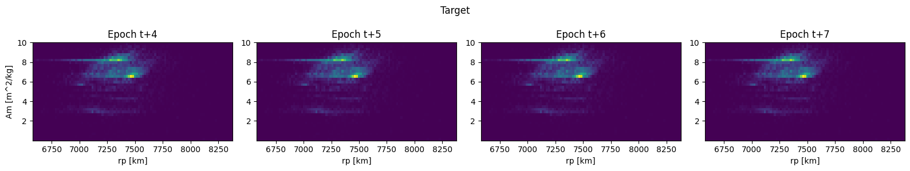

import sys
sys.path.append('..')
from tsai.basics import *Model utils
stack_density_list_as_preds_targs
stack_density_list_as_preds_targs (l)
# test with a list of DensitySeqs
data = np_load_compressed('TLE_density_10_15x15.npy.gz',
path='../example_data')
ds = DensityData(data, lbk=4, h=4, gap=0)
tl = TfmdLists(range(len(ds)), DensityTupleTransform(ds))
l = [y for _,y in tl]
final_preds = stack_density_list_as_preds_targs(l)
test_eq(len(final_preds), 4)
test_eq(final_preds[0].shape, (10, 1, 36, 99))
for i in range(len(ds)):
test_eq(l[i], DensitySeq.from_preds_or_targs(final_preds, i))
len(final_preds), final_preds[0].shape(4, torch.Size([10, 1, 36, 99]))data[:,4:8].shape(10, 4, 36, 99)Learner.get_preds_iterative
Learner.get_preds_iterative (dl, n_iter=1, track_losses=False, with_input=False, ds_idx:int=1, act=None, inner:bool=False, reorder:bool=True, cbs:Uni on[fastai.callback.core.Callback,collections .abc.MutableSequence,NoneType]=None, save_preds:pathlib.Path=None, save_targs:pathlib.Path=None, with_preds:bool=True, with_targs:bool=True, concat_dim:int=0, pickle_protocol:int=2)
Call get preds iteratively on a dataloader with a DensityTupleTransform TODO: Crashes if inner=True (kwargs), so it will produce invisible progress bars
| Type | Default | Details | |
|---|---|---|---|
| dl | NoneType | None | DataLoader to use for predictions, defaults to ds_idx=1 if None |
| n_iter | int | 1 | |
| track_losses | bool | False | |
| with_input | bool | False | Return inputs with predictions |
| ds_idx | int | 1 | DataLoader to use for predictions if dl is None. 0: train. 1: valid |
| act | NoneType | None | Apply activation to predictions, defaults to self.loss_func’s activation |
| inner | bool | False | If False, create progress bar, show logger, use temporary cbs |
| reorder | bool | True | Reorder predictions on dataset indicies, if applicable |
| cbs | Callback | MutableSequence | None | None | Temporary Callbacks to apply during prediction |
| save_preds | Path | None | Path to save predictions |
| save_targs | Path | None | Path to save targets |
| with_preds | bool | True | Whether to return predictions |
| with_targs | bool | True | Whether to return targets |
| concat_dim | int | 0 | Dimension to concatenate returned tensors |
| pickle_protocol | int | 2 | Pickle protocol used to save predictions and targets |
default_device(0)
# TODO: test for gaps 0, pºositive and negative
lbk = 4
h = 4
n_iter= 4
gap = 0
data = np_load_compressed('TLE_density_10_15x15.npy.gz',
path='../example_data')
ds = DensityData(data, lbk=lbk, h=h, gap=gap)
tl = TfmdLists(range(len(ds)), DensityTupleTransform(ds))
dls = tl.dataloaders(bs=32, shuffle=False, num_workers=0)
learn = Learner(dls=dls,
model=StackUnstack(SimpleModel()).to(default_device()),
loss_func=StackLoss())
inp, p,t,losses = learn.get_preds_iterative(dl=dls[0], n_iter=n_iter,
track_losses=True, with_input=True);
test_eq(len(p), h)
test_eq(p[0].shape, [10, 1, 36, 99])
test_eq(losses.shape[0], n_iter)
assert all_equal(torch.stack(inp, dim=learn.dim).squeeze(0),
torch.stack([torch.stack(learn.dls.itemgot()[x][0], dim=0) for x in range(dls[0].n)], dim=0))
# Compare with the direct prediction made with a gap
ds_gap = copy(ds)
ds_gap.gap += (n_iter-1)*h
dl_gap = dls.new(TfmdLists(range(len(ds_gap)), DensityTupleTransform(ds_gap)))
p2,t2 = learn.get_preds(dl=dl_gap)
loss2 = learn.loss_func(p2,t2).item()
test_ne(p, p2)
test_eq(t, t2)(10, 8, 36, 99)
(10, 8, 36, 99)
(10, 8, 36, 99)Learner.get_individual_losses
Learner.get_individual_losses (p, t)
Get the loss for each element given predictions and targets computed in learn.get_preds
# test
individual_losses = learn.get_individual_losses(p,t)
test_eq(len(individual_losses), len(ds))
test_close(individual_losses.mean(), learn.loss_func(p,t), eps=1e-2)Learner.predict_at
Learner.predict_at (idx, ds_idx=1, ds=None, with_input=False)
Predict at a given index on a given dataset, or in the learner’s
# Test
p0, t0 = learn.predict_at(0, ds_idx=0)
test_eq(len(p0), h)
test_eq(p0[0].shape, [1, 1, 36, 99])
assert all_equal(torch.stack(t0, dim=learn.dim).squeeze(0),
torch.stack(learn.dls.itemgot()[0][1], dim=0))
inp0,p0,t0 = learn.predict_at(0, ds_idx=0, with_input=True)
test_eq(len(p0), h)
test_eq(p0[0].shape, [1, 1, 36, 99])
test_eq(t0[0].shape, [1, 1, 36, 99])
test_eq(inp0[0].shape, [1, 1, 36, 99])
assert all_equal(torch.stack(inp0, dim=learn.dim).squeeze(0),
torch.stack(learn.dls.itemgot()[0][0], dim=0))
assert all_equal(torch.stack(t0, dim=learn.dim).squeeze(0),
torch.stack(learn.dls.itemgot()[0][1], dim=0))Learner.show_preds_at
Learner.show_preds_at (idx, p=None, t=None, inp=None, with_input=None, with_targets=False, titles=['Input', 'Prediction', 'Target'], start_epoch=0, x_disc=None, y_disc=None, figsize=(4, 3), epochs=None)
Show predictions at a given index
# Test
lbk = 4
h = 4
n_iter= 2
gap = -3
data = np_load_compressed('TLE_density_10_15x15.npy.gz',
path='../example_data')
ds = DensityData(data, lbk=lbk, h=h, gap=gap)
tl = TfmdLists(range(len(ds)), DensityTupleTransform(ds))
dls = tl.dataloaders(bs=32, shuffle=False, num_workers=0)
learn = Learner(dls=dls,
model=StackUnstack(SimpleModel()).to(default_device()),
loss_func=StackLoss())
inps, p,t = learn.get_preds_iterative(dl=dls[0], n_iter=n_iter, with_input=True)learn.show_preds_at(0, p=p, t=t, inp=inps)

